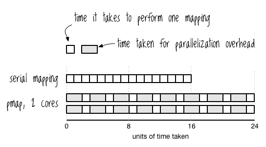

<!doctype html>
<html lang="en">

  <head>
    <meta charset="utf-8">

    <title>Practical Clojure libraries for busy backends - Clojure Finland Meetup #1</title>

    <meta name="description" content="Introducing some goodness provided by the awesome Clojure Community">
    <meta name="author" content="Fabrizio Ferrai">

    <meta name="apple-mobile-web-app-capable" content="yes" />
    <meta name="apple-mobile-web-app-status-bar-style" content="black-translucent" />

    <meta name="viewport" content="width=device-width, initial-scale=1.0, maximum-scale=1.0, user-scalable=no, minimal-ui">

    <link rel="stylesheet" href="../reveal.js/css/reveal.css">
    <link rel="stylesheet" href="../reveal.js/css/theme/night.css" id="theme">

    <!-- Printing and PDF exports -->
    <script>
      var link = document.createElement( 'link' );
      link.rel = 'stylesheet';
      link.type = 'text/css';
      link.href = window.location.search.match( /print-pdf/gi ) ? '../reveal.js/css/print/pdf.css' : '../reveal.js/css/print/paper.css';
      document.getElementsByTagName( 'head' )[0].appendChild( link );
    </script>

    <!--[if lt IE 9]>
    <script src="../reveal.js/lib/js/html5shiv.js"></script>
    <![endif]-->

    <!-- For syntax highlighting -->
	<link rel="stylesheet" href="../reveal.js/highlight.js/src/styles/solarized-light.css" id="highlight-theme">
    <link rel="stylesheet" href="https://maxcdn.bootstrapcdn.com/font-awesome/4.3.0/css/font-awesome.min.css">
  </head>

  <style type="text/css">
  .reveal pre code {
    color: #3f3f3f;
    background: #eee none repeat scroll 0% 0%;
    font-size: 1.3em;
    line-height: 1.3em;
    border-radius: .2em;
    max-height: 600px;
  }

  .reveal pre {
      width: 100%;
  }

  .fa {
      margin-right: 1em;
  }

  #avatar{
    box-shadow: 0 0 20px rgba(0, 0, 0, .5);
    -webkit-box-shadow: 0 0 20px rgba(0, 0, 0, .5);
    -moz-box-shadow: 0 0 20px rgba(0, 0, 0, .5);
    margin-bottom: .8em;
    width: 200px;
    height: 200px;
    border: 0px;
    border-radius: 125px;
    -webkit-border-radius: 125px;
    -moz-border-radius: 125px;
  }

  #ferrai-io {
      color: #373a3c;
      letter-spacing: -3px;
      font-size: 1em;
  }

  #subtitle {
      color: #373a3c;
      letter-spacing: -2px;
      font-size: .85em;
      margin-bottom: 3em;
  }

  .personal-links {
      display: inline-block;
      text-align: left;
  }

  .personal-links h4 {
      margin-bottom: .2em;
  }

  .personal-links h4 a {
      color: #373a3c;
      letter-spacing: -2px;
  }

  .personal-links h4 a:hover {
      color: #373a3c;
  }

  .reveal blockquote h3 {
      font-weight: 400;
  }

  .reveal h1.potty, .reveal h2.potty {
      color: black;
  }

  </style>

  <body>
    <div class="reveal">
      <!-- Any section element inside of this container is displayed as a slide -->
      <div class="slides">
        <!-- Slides are separated by newline + three dashes + newline, vertical slides identical but two dashes -->
			<section data-markdown data-separator="^\n---\n$"
			         data-separator-vertical="^\n--\n$">
				<script type="text/template">

<!-- .slide: data-background="img/bg.jpg" -->

### Finland Clojure Meetup #1

<br/><br/>

## Practical Clojure Libraries <br> for Busy Backends

#### Fabrizio Ferrai


---

<!-- .slide: data-background="img/bg.jpg" -->

# Thank you!
### [Miika](https://twitter.com/zonpantli), [Metosin](https://twitter.com/metosin), everyone here
<br />
## This is awesome.

---

<!-- .slide: data-background="#babbab" -->


## <a id="ferrai-io" href="https://ferrai.io">ferrai.io</a>

<h6 id="subtitle"> Software Engineer, Hacker, Consultant, <br> Music lover, Pythonist, Clojure disciple</h6>

<div class="personal-links">
    <h4><a href="https://twitter.com/fabferrai"><i class="fa fa-twitter"></i> @fabferrai</a></h4>
    <h4><a href="https://github.com/ff-"><i class="fa fa-github-alt"></i> github.com/ff-</a></h4>
    <h4><a href="mailto:fabrizio@ferrai.io"><i class="fa fa-envelope-o"></i> fabrizio@ferrai.io</a></h4>
</div>

--

## [slides.ferrai.io/clj-libs-pt1](https://slides.ferrai.io/clj-libs-pt1)

--

### "It seemed impossible but we did it"

<iframe id="player" type="text/html" width="100%" height="600px"
  src="https://www.youtube.com/embed/aVinOrHwUdk"
  frameborder="0"></iframe>

--


---

# Agenda

<br/>

* ### Real title of today's
* ### Stuff, code, blablabla

---

<!-- .slide: data-background="#005b78" -->

## `Fact #1`

## Open Source is one of the best things possible on the Earth.

--

## [Github repositories over time](https://github.com/blog/1724-10-million-repositories)


--

# Real Today's Title
## "Thank you people that open source your stuff and take care of it in the wild because you're amazing and you save a huge amount of time to everyone and you deserve love"

---

# Why we're <br />doing this

--

<!-- .slide: data-background="#005b78" -->

## `Fact #2`

## It's OK to have opinions.

--

## "I need to do shit in the best way possible in the less time possible. Should I have opinions on my tools?"

--

<!-- .slide: data-background="img/meat.jpg" -->

## Practical, lib, busy, backend <br />= FAST STUFF

<br />

- easy to get started
- idiomatic - "clojurish"
- easy on the eyes
- easy to understand in context
- performances would be nice too

--

## Today's libs

- Enduro
- Timbre
- Cronj
- Claypoole
- Truss

---

# Little fake story

--

## Meet Backy, <br/>our little young webserver.


--

<!-- .slide: data-background="#666" -->

## OK scrap that, a potato will do.


--

<!-- .slide: data-background="#fff" -->

## "Potty" <!-- .element: class="potty" -->


--

# CODE!

--

<!-- .slide: data-background="#444" -->

## Our Potty is sad

- No persistence
- Don't know what's going on
- Doesn't do much either


*Hey, I'm a software engineer and not a painter for a reason.

---

<!-- .slide: data-background="#fff" -->

# Easy persistence <!-- .element: class="potty" -->


--

# [Enduro](https://github.com/alandipert/enduro)

### Durable atoms in Clojure

--

## [Implementing it](http://www.brandonbloom.name/blog/2013/06/26/slurp-and-spit/)

```clojure
(import 'java.io.File)

(def db (atom {}))
(def save-agent (agent nil))

(defn load-data []
  (reset! db (read-string (slurp "somefile"))))

(defn save-data []
 (send-off save-agent
   (fn [_]
     (spit "somefile.tmp" (prn-str @db))
     (.renameTo (File. "somefile.tmp") (File. "somefile")))))
```

--

## Caveats

- Writes the entire atom contents on every swap!, so writes are very slow compared to a real database.
- Enduro atoms must fit in memory. Use with very small data only.
- No prevention of allocating the same resource to multiple atoms. Handle your dragons.

<br />

## When to use

- Sketching out a project
- Low-memory environments

--

## Similar projects

- [Exoref](https://github.com/lantiga/exoref) - Redis
- [Faraday](https://github.com/mixradio/faraday-atom) - DynamoDB
- [Zookeeper-atom](https://github.com/torsten/zookeeper-atom) - Zookeeper

<br />

## And of course...

- [Datascript](https://github.com/tonsky/datascript) - not persistent, Datalog
- [Datomic](http://www.datomic.com/) - persistent with different backends, Datalog

---

<!-- .slide: data-background="#fff" -->

# Logging <!-- .element: class="potty" -->


--


> Do I need logging?
>
>
> -- <cite>You</cite>

Remember when learning to program stuff was blowing up?

--

## `printf()` debugging

<br />

```c
#include <stdio.h>

...

int main () {
    possibly_failing_computation_1();
    printf("Dio \n");
    possibly_failing_computation_2();
    printf("Madonna \n");
}
```

And they said: this is bad, use a debugger

--


--

## Logging is "printf debugging", but in production

--

# [Timbre](https://github.com/ptaoussanis/timbre)

### Pure Clojure/Script logging library

<br/>

(Best logging library, ever.)

--

## Timbre is awesome because:

- it has sane defaults
- import and you're ready to log, which is the best
- configuration is dead simple
- but powerful

--

## Hacks #1

```clojure
(def log-file-name "my.log")
(timbre/merge-config!
  {:appenders {:spit   (appenders/spit-appender {:fname log-file-name})
               :postal (postal-appender/postal-appender
                         ^{:host (System/getenv "POSTAL_HOST")
                           :user (System/getenv "POSTAL_USER")
                           :pass (System/getenv "POSTAL_PASSWORD")
                           :port 587 :tls true}
                         {:from (System/getenv "POSTAL_FROM")
                          :to   (System/getenv "POSTAL_TO")})}
   :output-fn (fn [data]
                (timbre/default-output-fn
                  {:stacktrace-fonts {}}
                  (assoc data :msg_
                    (str (.toString (Thread/currentThread)) " "
                         (force (:msg_ data))))))})
```

--

## Hacks #2

```clojure
(def log-file-name  "./data/standard.log")
(def hist-file-name "./data/history.log")
;; One standard logger, and one for history
;; HACK: REPORT level (the higher) is reserved for history,
;; don't use for other. It gets printed only in the history logger,
;; while ignored in the others.
(timbre/merge-config!
 {:appenders
  {:spit    (assoc
              (appenders/spit-appender {:fname log-file-name})
              :fn (fn [data]
                    (when-not (= (:level data) :report)
                      ((:fn (appenders/spit-appender {:fname log-file-name}))
                       data))))
   :history (assoc
              (appenders/spit-appender {:fname hist-file-name})
              :min-level :report)}})
;; No colors plz, and better (sortable!) timestamps
(timbre/merge-config! {:output-fn (partial timbre/default-output-fn
                                           {:stacktrace-fonts {}})
                       :timestamp-opts {:pattern "yyyy-MM-dd HH:mm:ss"}})

```

--

## Freebie: profiling

---

<!-- .slide: data-background="#fff" -->

# Scheduling <!-- .element: class="potty" -->


--

## Totally partial list of reasons for using Clojure to do cron

<br />

- Library goodies
- Application goodies
- Systemd

--

## [Tons of scheduling libs](http://z.caudate.me/immutability-time-and-task-schedulers/)

- [at-at](https://github.com/overtone/at-at)
- [chime](https://github.com/james-henderson/chime)
- [clj-cronlike](https://github.com/kognate/clj-cronlike)
- [cron4j](http://www.sauronsoftware.it/projects/cron4j)
- [monotony](https://github.com/aredington/monotony)
- [quartzite](https://github.com/michaelklishin/quartzite)
- [schejulure](https://github.com/AdamClements/schejulure)
- [cronj](https://github.com/zcaudate/cronj)

<br />

```clojure
(use 'overtone.at-at)
(def my-pool (mk-pool))
(at (+ 1000 (now)) #(println "hello from the past!") my-pool)
```

--

# [Cronj](https://github.com/zcaudate/cronj)

### A cron-inspired task scheduling library

--

## Design

Main concept is *task*, composed by a *handler* and a *schedule*.

*Scheduler* is notified of the current time by a *timer*, triggers tasks.

Handler is just a function:
```clojure
(fn [t opts]
    (your-task-here))
```

--

## Why it's awesome

- Really cron-like
- Manually triggered tasks if needed
- Multiple threads running
- Pre/Post hooks
- Simulations!

---

<!-- .slide: data-background="#fff" -->

# Parallelizing <!-- .element: class="potty" -->


--

## "But hey, we got `pmap` right?"

--

### But `pmap` is <del>*awesome*</del> counterintuitive.

- Waits for the slowest computation
- Parallelization overhead



<br />

[Great presentation by David Edgar Liebke](http://incanter.org/downloads/fjclj.pdf)

--

## Solution #1: [`ppmap`](http://www.braveclojure.com/zombie-metaphysics/)

```clojure
(defn ppmap [f partition-size coll]
  (->> coll
       (partition-all partition-size) ; Partition into chunks.
       (pmap (comp doall              ; Map f over each chunk,
                   (partial map f)))  ; and use doall to force it to be
                                      ; realized in the worker thread.
       (apply concat)))               ; Concatenate the chunked results
                                      ; to form the return value.
```


--

## Solution #2: [reducers](http://clojure.org/reference/reducers)

```
(def l (range 10000000))

(time (def a (doall (pmap #(* % %) l))))
"Elapsed time: 14674.415781 msecs"

(time (def a (doall (map #(* % %) l))))
"Elapsed time: 1119.107447 msecs"

(time (def a (doall (into [] (r/map #(* % %) l)))))
"Elapsed time: 1049.754652 msecs"
```

--

# [Claypoole](https://github.com/TheClimateCorporation/claypoole)

### Threadpool tools for Clojure

--

## Improvements over `pmap`

- set the size of the threadpool ->> tunable for non-CPU-bound tasks like network requests
- share a threadpool between multiple pmaps
- eagerly streaming rather than lazy
- unordered pmap ->> handle the first response as fast as possible

--

## Best example

```clojure
(->> image-urls
     ;; Put the URL in a map.
     (map (fn [url] {:url url}))
     ;; Add the image data to the map.
     (cp/upmap network-pool
               #(assoc % :data
                       (-> % :url clj-http.client/get :body)))
     ;; Add the resized image to the map.
     (cp/upmap cpu-pool
               #(assoc % :resized (resize (:data %)))))
```


---

<!-- .slide: data-background="#fff" -->

# Asserting <!-- .element: class="potty" -->


--

### Let's face it, testing is necessary*
### ...but often it's not enough.

<br />

*but boring

--

### Undocumented type assumptions

- `NullPointerException` anyone?
- HELPFUL stack traces.

--

## Solutions

- Comments?
- Unit tests?
- [core.typed](https://github.com/clojure/core.typed)
- [@plumatic/schema](https://github.com/plumatic/schema)
- [Truss](https://github.com/ptaoussanis/truss)

--

# [Truss](https://github.com/ptaoussanis/truss)

### Assertions API for Clojure/Script

---

<!-- .slide: data-background="#fff" -->

# Happy Ending <!-- .element: class="potty" -->


---

<!-- .slide: data-background="#00aa00" -->


---

# Thank you!


These slides are licensed with Creative Commons<br>
Attribution-ShareAlike 3.0 Unported

## [ferrai.io](https://ferrai.io)

          </script>
        </section>
      </div>

    </div>

    <script src="../reveal.js/lib/js/head.min.js"></script>
    <script src="../reveal.js/js/reveal.js"></script>

    <script>

    // Full list of configuration options available at:
    // https://github.com/hakimel/reveal.js#configuration
    Reveal.initialize({
      controls: true,
      progress: true,
      history: true,
      center: true,

      transition: 'slide', // none/fade/slide/convex/concave/zoom

      // Optional reveal.js plugins
      dependencies: [
        { src: '../reveal.js/lib/js/classList.js', condition: function() { return !document.body.classList; } },
        { src: '../reveal.js/plugin/markdown/marked.js', condition: function() { return !!document.querySelector( '[data-markdown]' ); } },
        { src: '../reveal.js/plugin/markdown/markdown.js', condition: function() { return !!document.querySelector( '[data-markdown]' ); } },
        { src: '../reveal.js/plugin/highlight/highlight.js', async: true, callback: function() { hljs.initHighlightingOnLoad(); } },
        { src: '../reveal.js/plugin/zoom-js/zoom.js', async: true },
        { src: '../reveal.js/plugin/notes/notes.js', async: true }
      ]
    });

  </script>

  </body>
</html>
